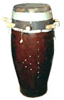
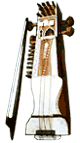
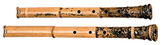
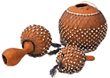
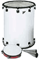
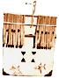
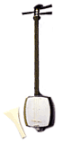
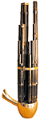
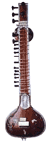

Sabar: Сет из пяти - семи состроенных барабанов сенегальской народности Wolof. Для настройки используется система из семи стержней, каждый из которых условно представляет один из барабанов. Sabar вырезают из ствола баобаба
Звук извлекают ударами рукой и длинной тонкой палкой galan, сделанной из дерева sump. Ритмы Wolof делятся на две категории: барабанные композиции (bak) и танцевальные ритмы; основные аккомпанирующие ритмы образуют понятие mbalax.
Народность Serer также использует sabar, но исполняет собственные ритмы.
Исполнитель играет сидя, держа инструмент вертикально.
Shakuhachi: Японская флейта с 5 (раньше 7) звуковыми отверстиями. Входит в состав инструментов традиционного японского ансамбля в группу санкеку - кото, сямисэн, сякухати и, в наши дни весьма редко, коку.
Истоки инструмента ведут из древнего Египета, миграцию через Индию и Китай до появления в Японии в VI веке. Одно из первых упоминаний о нем относится к периоду Эдо. Монахи существовавшей тогда религии фукэ-сю использовали сякухати как духовный инструмент - но исключительно сольный и находящийся под запретом для светских людей. Только с середины XVIII века сякухати стал использоваться в ансамбле с кото и сямисэн.
По одной из легенд длина и форма современного инструмента связаны с введением запрета на ношение мечей, после чего самураи начали носить с собой сякухати в качестве дубинки. Для того, чтобы инструменты были более длинные и мощные, их делали из корней бамбука.
Подобно японскому саду, музыка сякухати - наиболее впечатляющий пример силы художественного ограничения. Сольная музыка игнорирует все стандартные системы нотации, используя мельчайшие нюансы высоты звука и его окраски, хотя, как любая японская традиция, каждая школа сякухати все же имеет определенную систему нотной записи.
Sesse: Африканский металлический резонатор в форме уха с небольшими колечками по его периферии. Прикрепляется ко многим инструментам, например, bolon и djembe.

и покрывают выстриженной козьей кожей. В зависимости от типа барабана и его функции кожа присоединяется либо сложным методом укладки, либо крепится непосредственно в корпусе стержнями. Некоторые sabar открыты снизу и по форме похожи на бокал; другие уменьшаются к основанию и похожи на яйцо. Семейство состоит из следующих барабанов: m'bung m'bung, sabar n'der, lambe/thiol, talmbat, gorong yeguel, khine.Звук извлекают ударами рукой и длинной тонкой палкой galan, сделанной из дерева sump. Ритмы Wolof делятся на две категории: барабанные композиции (bak) и танцевальные ритмы; основные аккомпанирующие ритмы образуют понятие mbalax.
Народность Serer также использует sabar, но исполняет собственные ритмы.

Sarangi: Индийский струнный смычковый инструмент. Существует несколько разновидностей инструмента; типичная - с деревянным украшенным корпусом(непосредственно переходящим в короткую шейку) и кожаной декой. У sarangi 3-4 основные струны и 11-15 резонансовых; основные настроены в кварту и квинту, резонансовые - в тонах диатоники.Исполнитель играет сидя, держа инструмент вертикально.
Shakuhachi: Японская флейта с 5 (раньше 7) звуковыми отверстиями. Входит в состав инструментов традиционного японского ансамбля в группу санкеку - кото, сямисэн, сякухати и, в наши дни весьма редко, коку.

Название буквально означает 1.8 футов длины классической флейты.Истоки инструмента ведут из древнего Египета, миграцию через Индию и Китай до появления в Японии в VI веке. Одно из первых упоминаний о нем относится к периоду Эдо. Монахи существовавшей тогда религии фукэ-сю использовали сякухати как духовный инструмент - но исключительно сольный и находящийся под запретом для светских людей. Только с середины XVIII века сякухати стал использоваться в ансамбле с кото и сямисэн.
По одной из легенд длина и форма современного инструмента связаны с введением запрета на ношение мечей, после чего самураи начали носить с собой сякухати в качестве дубинки. Для того, чтобы инструменты были более длинные и мощные, их делали из корней бамбука.
Подобно японскому саду, музыка сякухати - наиболее впечатляющий пример силы художественного ограничения. Сольная музыка игнорирует все стандартные системы нотации, используя мельчайшие нюансы высоты звука и его окраски, хотя, как любая японская традиция, каждая школа сякухати все же имеет определенную систему нотной записи.

Shekere: Широко распространенный африканский перкуссийный инструмент. Сделан из gourd, украшенного плетеной сеткой с бусинами. Бусины делают из семян, морской гальки и керамические.Sesse: Африканский металлический резонатор в форме уха с небольшими колечками по его периферии. Прикрепляется ко многим инструментам, например, bolon и djembe.

Surdo: Очень глубокий, громкий басовый двухголовый барабан из Бразилии. Сделан из металла или тонкого дерева, головы покрыты козлиной кожей(в наши дни - часто пластиком). Необходим в samba-парадах - его называют сердцем ритма самбы. Звук извлекают деревянной колотушкой и рукой или двумя колотушками.
Sanza: 1. Мозамбикская разновидность thumb-piano с тремя рядами ключей.2. Thumb-piano пигмеев, собранное из железных ключей, установленных над развернутым относительно звукового отверстия мостом.
Saz (Saaz): Струнный щипковый инструмент, распространенный на Востоке и в Средней Азии. Деревянный корпус грушевидной формы переходит в длинную шейку с ладами, над которыми расположены 3-4 комплекта сдвоенных или строенных струн.
Равно сольный и оркестровый инструмент.
Shamisen: Японская лютня с длинным безладовым грифом, появившаяся в середине XVI века. Считается, что предшественником сямисэна был китайский сангэн, который попал в Японию через острова Рюкю. Другим прототипом называют сансин, до сих пор существующий на острове Окинава.
Размер и форма инструмента могут варьироваться, на большинстве сямисэн три шелковых струны.

Струны протянуты над звуковым корпусом, который раньше покрывали змеиной кожей (сансин - и по сей день), а сегодня предпочитают кожу кошки или реже собаки. В начале звук извлекали небольшим наперсным медиатором, надетым на указательный палец, который позднее был заменен исполнителями на бива на большой деревянный или черепаховый|костяной медиатор в форме лопатки. Медиатором ударяют не только по струнам, но и по деке; для предохранения от повреждений деку покрывают пергаментным щитком.Строй зависит от музыкальной текстуры, каждая из которых выражает определенное настроение. В основной системе - сансагари (элегантное, женственное/мир и спокойствие) - каждая струна настраивается в четвертую от более низкой. В хонтеси (мужественное, торжественное) - струны настроены в четвертую и пятую ступень от нижней струны. В ниагари (яркое, деревенское/моменты счастья) - в пятую и четвертую. В музыке Нагаута сансагари и ниагари «меняются» настроениями.

Sheng (Шэн): Китайский язычковый пневматический инструмент, один из древнейших. Его часто называют «Китайским губным органом». Состоит из 13-24 обычно бамбуковых трубок, вставленных в котлообразный резервуар с патрубком для вдувания воздуха. Корпус-резервуар изготавливают либо из тыквы (народный вариант), либо из выдолбленной древесины (в придворных оркестрах).Диапазон инструмента зависит от количества и размера трубок. Для извлечения звука закрывают круглое отверстие в основании каждой трубки.
В Японии аналогичный инструмент известен под именем сё и он является одним из ключевых в представлениях Гагаку.
Sintir: Большая лютня, на которой играют музыканты Gnawa, по большей части в Марокко. На инструменте единственная толстая струна, барабано-подобный звуковой корпус, и перемещаемый резонатор, который добавляет жужжание к основным низким, резонирующим нотам.
Sitar: Самый известный индийский струнный инструмент. Автором принято считать состоявшего при дворах султанов Khilji и Tughlak

в XIII веке перса Amir Khusru, который сконструировал ситар, опираясь на трех-струнные разновидности veena. Название происходит от персидского выражения seh-tar, что означает «три струны», которые были у инструмента изначально.Состоит из деревянного выпуклого корпуса и длинного грифа с 16-20 навязными перенастраиваемыми ладами. Два gourds из тыквы - больший в корпусе и меньший прикреплен ближе к концу грифа - служат для усиления звука.
У ситара 7 основных струн (chikari), включая боковые, которые используются одновременно для ведения ритма и постоянного гудящего звука. Также бывает до 11 резонансовых струн (tarab), которые проходят почти параллельно основным под ладами. Они настраиваются под шкалу исполняемой мелодии. Медиатором на указательном пальце правой руки извлекают звук из основных струн.